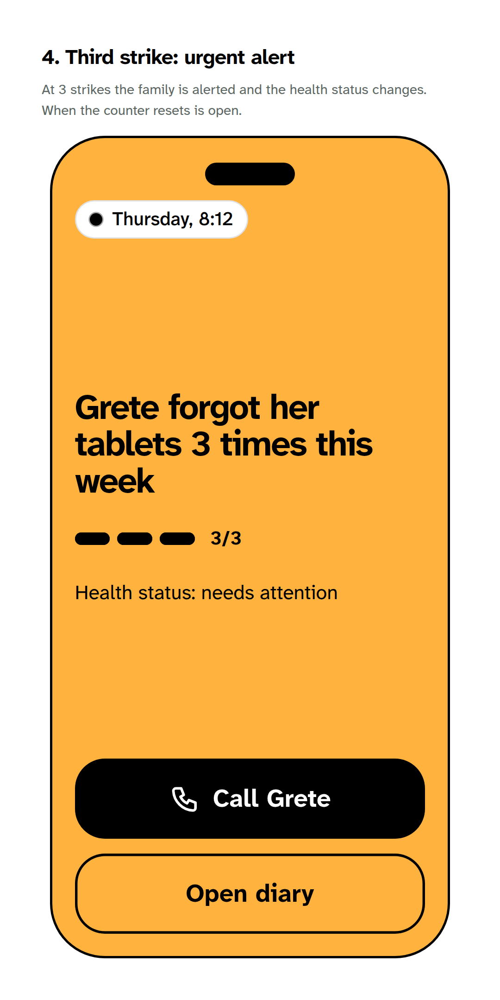
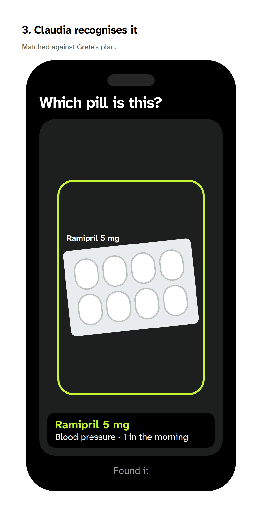
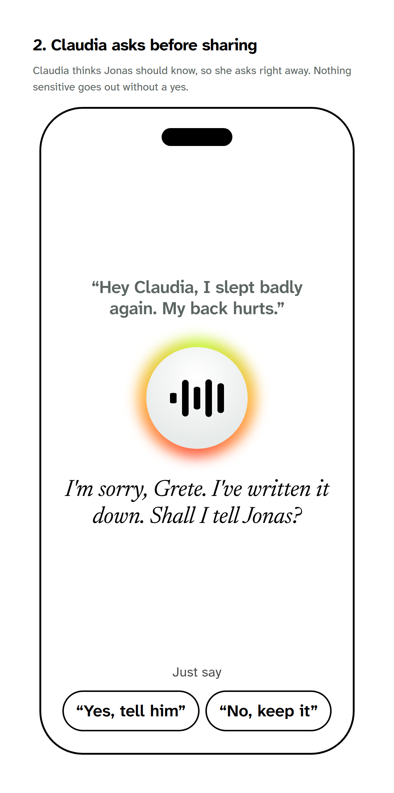

Did she take her pills? Why isn't she answering?
stressedoverwhelmedsilentworriedburnt out
Grete, did you take your Ramipril?

Claudia asks

Third strike: Jonas knows

Which pill?
Shall I tell Jonas?

Family code

Asks before sharing

A warm nudge